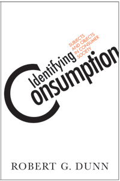

<body bgcolor="#FFFFFF" text="#000000" link="#0000FF" vlink="#CC0000" alink="#CC0000"><center><hr width="350" size="1" align="center" noshade>A challenging new theoretical approach to the study of consumption and identity<hr width="350" size="1" align="center" noshade><p><a href="https://cdcshoppingcart.uchicago.edu/Cart/ChicagoBook.aspx?ISBN=9781592138692&&PRESS=temple" target="_top">Buy this book!</a> | <a href="https://cdcshoppingcart.uchicago.edu/Cart/Cart.aspx?PRESS=temple" target="_top">View Cart</a> | <a href="https://cdcshoppingcart.uchicago.edu/Cart/Cart.aspx?PRESS=temple" target="_top">Check Out</a></p><p></p></center><!--none//--><h1>Identifying Consumption</h1>
<H2>Subjects and Objects in Consumer Society</H2>
<h3>Robert G. Dunn</h3>
<P>cloth 1592138691 $80.50, May 08, <FONT COLOR=#990033>Available</FONT>
<br>paper 1592138705 $28.95, May 08, <FONT COLOR=#990033>Available</FONT>
<br>Electronic Book 1592138713 $28.95 <FONT COLOR=#990033>Available</FONT>
<BR> 248 pp
5.5x8.25
2&nbsp;figures
</P><BLOCKQUOTE><I>"</i>Identifying Consumption<i> is a bold and provocative treatment of many interlocking issues, which in their integration represent a study that is novel and much needed. More than a concise overview of critical theories of consumption, Dunn's smoothly written study also provides a sharp sense of the historical concern for consumption by tracing its emergence over the 20th century and its present culmination in the burgeoning interest in consumption studies today."</I>
<br>&#151<b>Jon Cruz</b>, University of California at Santa Barbara, and author of <I>Culture on the Margins</I><I></I></BLOCKQUOTE>
<p><i>Identifying Consumption</i> illustrates how an individual�s buying habits are shaped by the dynamics of the consumer marketplace�and thus how consumption and identity inform each other. Robert Dunn brings together the various theories of spending and develops a mode of analysis concentrating on the individual subjectivity of consumption. By doing so, he addresses how we spend and its relationship with status and lifestyle.
<p>Dunn provides a comprehensive guide to the study of modern consumer behavior before summarizing and critiquing the major theories of consumption. At this juncture, he proposes a method of analysis that focuses on the significance of status and lifestyle in social relations that can help explain how the consumer marketplace is shaped. He concludes by raising issues about different ways of consuming and the relationship between consumption and identity.
<BR>&nbsp;<h2>Excerpt</h2><P>Excerpt available at <a href="http://www.temple.edu/tempress">www.temple.edu/tempress</a></p>
<BR>&nbsp;<h2>Reviews</h2>
<p><I>"It is easy to go wrong writing about consumption, but Robert Dunn gets it right. In this subtle, sophisticated, and erudite exploration into the social dimensions of seemingly individual consumer aspirations and actions, Dunn explains how shopping serves as the center of the social world, how it influences the ways we come to understand ourselves and others. </i>Identifying Consumption<i> brilliantly captures the contradictory quality of consumption as both the apex of alienation and the ultimate in self-expression, as both a deeply personal and a quintessentially social negotiation of signs, symbols, and social relations."</i>
<br>&#151<b>George Lipsitz</b>, University of California, Santa Barbara and author of <i>Footsteps in the Dark</i>
<p><I>"In clear and well-written prose, Robert Dunn masterfully navigates a wide literature ranging from consumption studies to postmodernity. He not only places consumerism in theoretical and social context, but develops a remarkably original and sophisticated understanding of the interplay of identity and consumption in contemporary times."</i><br>&#151<b>Kenneth H. Tucker, Jr.</b>, Mount Holyoke College and author of <i>Classical Social Theory</i> and <i>Anthony Giddens and Modern Social Theory</i>
<p><I>"Dunn offers no either/or choices as to the roots of modern consumption; instead, he expertly constructs a careful lineage of the transition of the commodity object to one of insatiable consumer desire." </I>
<br>&#151<b><I><a href="http://www.southwestjournalofcultures.blogspot.com/" target="new">Southwestern Journal of Cultures</a></I></b>
<p><i>"Concisely and clearly, Dunn weaves together insights from sociology, psychology, and economics to analyze the 'systematic commodification of need and want.' His excellent examination of historical theorizing about consumption will in itself be useful in university classrooms.... Highly recommended."
</i><br>&#151;<b><i>Choice</i></b>
<p><i>"[A]n original and at times brilliant theoretical inquiry into the relationship between consumption, identity, and objects. As Dunn works through scholars...to build his case, his command of the literature alone makes his book a useful resource for those who study consumption sociologically." </i><br>&#151<b><i>Contemporary Sociology </i></b>
<BR>&nbsp;<h2>Contents</h2><P>
<BR> Acknowledgements
<BR>Introduction
<P><B>Part I: Commodities, Objects, the Subject</B>
<BR>1. The Triumph of the Commodity: Theoretical Lineages
<BR>2. Culturalizing Consumption
<BR>3. The Subjectivity of Consumption
<P><B>Part II: Lifestyle, Status, Identity</B>
<BR>4. The Social Relations of Consumption
<BR>5. The Identity of Consumption
<P>Conclusion
<BR>Notes
<BR>References
<BR>Index
</P><BR>&nbsp;<H2>About the Author(s)</H2>
<P><b>Robert G. Dunn</b> is Professor Emeritus, Department of Sociology, California State University, East Bay, and author of <i>Identity Crises: A Social Critique of Postmodernity</i>.</P>
<BR><H2>Subject Categories</H2>
<p><A HREF="/tempress/sociology.html" TARGET="_top">Sociology</a>
<BR><A HREF="/tempress/cultural.html" TARGET="_top">Cultural Studies</a>
<BR><A HREF="/tempress/philosophy.html" TARGET="_top">Philosophy and Ethics</a>
</p>
<p align="center"><a href="https://cdcshoppingcart.uchicago.edu/Cart/ChicagoBook.aspx?ISBN=9781592138692&&PRESS=temple" target="_top">Buy this book!</a> | <a href="https://cdcshoppingcart.uchicago.edu/Cart/Cart.aspx?PRESS=temple" target="_top">View Cart</a> | <a href="https://cdcshoppingcart.uchicago.edu/Cart/Cart.aspx?PRESS=temple" target="_top">Check Out</a></p><p><font face="Arial" size="1"><a href="copyright.html" onMouseOver="window.status='Web Copyright Policy';return true;" onMouseOut="window.status=''" title="Web Copyright Policy">&copy;</a> 2015 <a href="http://www.temple.edu" target="new" onMouseOver="window.status='Link to Temple University home page';return true;" onMouseOut="window.status=''" title="Link to Temple University home page">Temple University</a>. All Rights Reserved. http://www.temple.edu/tempress/titles/1983_reg.html</font></p>